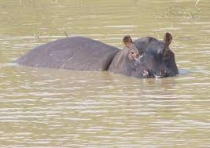
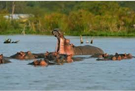
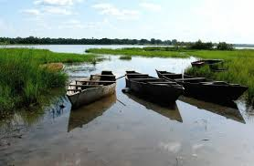

Description
: Le Lac Tengréla est un lac naturel célèbre pour ses eaux calmes et sa population d’hippopotames. Il offre un cadre paisible idéal pour les visiteurs et les amoureux de la nature.
Historique
Le lac est une source importante pour les communautés locales et a toujours été un lieu de pêche et de traditions. Il est aussi protégé pour préserver sa faune unique.
Galerie photos


